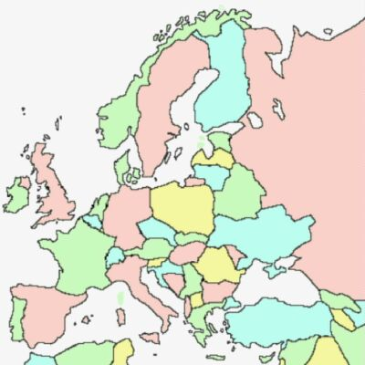

Nul n'est prophète siez li. Et v'là tch'est bein vrai s'nou-s'en juge par l'nombre dé consultants emplyiyés en Jèrri quand les pages d'la Gâzette sont remplyies séthée auprès séthée par l's avis des cheins tchi savent tout entouor tout. Vraînment, ch'est ravissant qu'nou peut r'mèrtchi d'itelle înnouothance sus tout sujet et sus toute tchestchion quand nou n'est pon à court d'propositions et d'explyicâtions dé toutes les carres et d'touos les bords.
Mais viyant qu'i' y'a un manque d'expèrts en Jèrri, jé n'pouvons pon êpaîngni des nôt's pouor un appouaintement hors Jèrri. Et j'sommes chanceurs d'aver attriotchi l'ex-ambassadeu Britannique à la Bulgarie, l'Sieur Steve Williams, à la djobbe dé Directeu d's Affaithes Ûropéennes dé l'Office des Îles d'la Manche à Bruxelles. Y'a étout l'avantage d'aver appouainté un horsain pouor nos r'présenter, car l'office èrprésente Jèrri et Dgèrnésy. Les Dgèrnésiais éthaient des doutanches si ch'tait un Jèrriais à pliaidgi la cause, et les Jèrriais j'pouôrrêmes-t-i' nos fier à la têtouongnise d'un Dgèrnésiais?
Achteu auve un Minnistre ès Horsains (à mié-temps) et eune èrprésentâtion pèrmanente (mais chârée) à Bruxelles, sans pâler d'nos offices à Caën et Rennes, j'avons prîns des preunmié pas dans la dipliomatie. Quand j'arriv'thons à l'îndépendance, l'office à Bruxelles s'sa sans doute not' preunmié ambassade (ch'est en tchi l'èrprésentâtion qué j'éthons à Londres s'sa eune Haute Commission, coumme ch'est la couôteunme entré les membres du Commonwealth).
L's articl'yes en Jèrriais, les "Countes d'eun' Èrv'nu", dé Messire Èrthu d'la Mathe (1914-1994), dipliomate et ambassadeu Britannique, tchi fûtent publiées dans la Gâzette dans l's années 1990s, avaient încliu d's aventuthes d'sa vie dipliomatique. I' sembl'yent qu'i' y'a ieu des dipliomates tchi n'sont pon tréjous dipliomatiques!
Avaû les siècl'yes Jèrri a ieu d's întéthêts hors l'Île. J'pouôrrêmes dithe qué Sèr 'tait not' preunmié colonnie (s'nou n'compte pon l'Angliétèrre qué j'contchéthînmes, nous auve les aut's Nouormands en 1066), et si l'histouaithe avait prîns un difféthent dêtou j'éthêmes peu aver eune présence en Nouvieau Jèrri. Tout coumme la forte présence des conmèrces Jèrriais au Nord d'l'Améthique au dgiêx-neuvième siècl'ye - sustout dans la pêque d'la mouothue - avait attriotchi d's êmîngrés d'Jèrri, sans encouothagi eune èrprésentâtion politique là-bas.
S'i' faut r'présenter ses întéthêts dans d'aut's capitales, nou n'pouôrra d'aut' s'fier à tchique aut' gouvèrnément. I' n'y'a coumme sé sa c'mînse à laver!
Geraint Jennings
Viyiz étout: